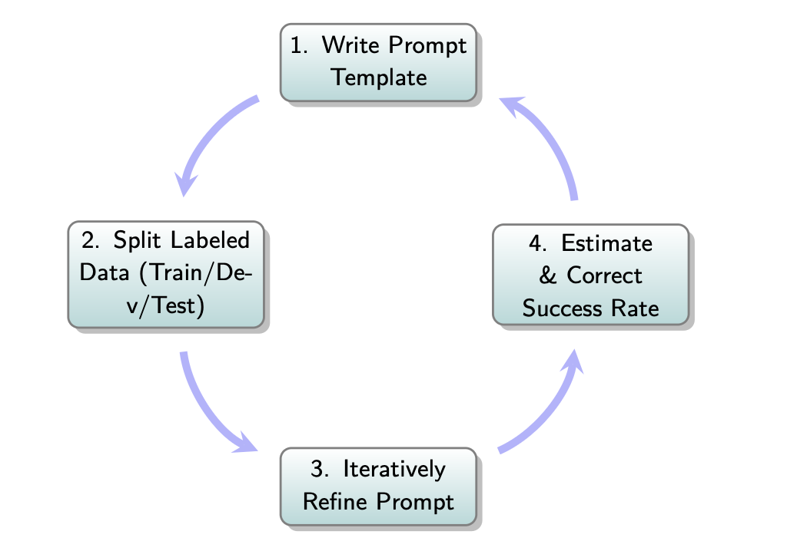

Implementing Automated Evaluators Guide for LLM Applications
Table of Contents
- Introduction
- Defining the Right Metrics
- Implementing Metrics
- Writing LLM-as-Judge Prompts
- Data Splits for Designing and Validating LLM-as-Judge
- Iterative Prompt Refinement for the LLM-as-Judge
- Estimating True Success Rates with Imperfect Judges
- Group-wise Metrics for Evaluating Multiple Outputs
- Common Pitfalls in Implementing Automated Evaluators
- Summary
- Exerciese
Introduction
Implementing automated evaluators, as outlined in Lesson 5 - Implementing Automated Evaluators, shifts the focus from qualitatively understanding failure modes (Analyze phase) to quantitatively measuring their prevalence in Large Language Model (LLM) applications. The goal is to enable fast, reliable assessment of how pipeline changes (e.g., prompt modifications, retrieval adjustments, model swaps) impact success or failure rates. Manual re-evaluation is too slow and inconsistent at scale, necessitating automated approaches.
Defining the Right Metrics
Effective measurement translates failure modes from error analysis (Section 3) into precise, quantifiable metrics. Specification failures (from ambiguous instructions) should be fixed before measuring generalization failures.
- Why Fix Specification Failures First?: Many are quickly resolvable by clarifying prompts, and building evaluators for easily fixable issues wastes resources. Evaluation should reflect the LLM’s generalization from clear instructions, not its ability to guess ambiguous intent.
- Reference-based vs. Reference-free Metrics:
- Reference-based: Compare LLM output to a “ground truth” or “golden” answer, valuable for iterative development and Continuous Integration (CI) checks where curating ground truth is feasible.
- Reference-free: Evaluate output based on inherent properties or rule adherence (e.g., tone, helpfulness), crucial for subjective outputs and scalable monitoring of unlabeled data.
- Executability Checks: Assess functional correctness by executing outputs (e.g., SQL queries, tool calls), not just textual plausibility.
Reference-Based and Reference-Free Metrics for Real Estate CRM Failures
| Failure Mode | Reference-Based Metric | Reference-Free Metric |
|---|---|---|
| Missing SQL Constraints | Compare generated SQL AST against a golden AST to verify presence of all expected WHERE clauses | Regex or AST traversal to detect mandatory filter keywords (e.g., pets_allowed, max_price) |
| Invalid Tool Usage | Match sequence of tool calls to a reference trace containing only valid tool identifiers | Static schema check: ensure each invoked tool name exists in the registered tool registry |
| Incomplete Email Content | Token or word-level overlap between generated email and a reference email containing all required fields | Keyword presence check for mandatory sections (budget, location, client name) using regex patterns |
| Persona-Tone Mismatch | Compare judge’s tone label on generated email against human-labeled references | LLM-as-Judge prompt for binary tone classification (Pass/Fail) based on persona definitions |
| Location Ambiguity | Compare disambiguated location entity IDs against ground-truth region codes | Geocoding-based check: map mentioned place to coordinates and verify consistency with user-specified region |
Example Failure Modes from Real Estate CRM Assistant Error Analysis
| Failure Mode Category | Description |
|---|---|
| Missing SQL Constraints | Omits user-specified filters (e.g., pets_allowed, max_price) in SQL. |
| Incorrect SQL Aggregation | Generates SQL grouping by day instead of week due to ambiguous phrasing. |
| Invalid Tool Usage | Fabricates non-existent tool names or actions (e.g., book_showings). |
| Incomplete Email Content | Fails to include key client details (budget, location) in communications. |
| Persona-Tone Mismatch | Uses language unsuitable for the client’s persona (e.g., informal with luxury client). |
| Incorrect Tool Sequencing | Attempts email composition before retrieving necessary listing data. |
| Unjustified Tool Calls | Issues actions (scheduling, messaging) not requested or grounded in prior steps. |
| Location Ambiguity | Interprets a common place name (e.g., “Springfield”) with the wrong region. |
Implementing Metrics
Automated evaluators estimate the prevalence of each failure mode.
- Code-based Evaluators: Ideal for objective, rule-based failures (e.g., JSON validity, regex for forbidden phrases, logical checks). They are fast, cheap, deterministic, and interpretable.
- LLM-as-Judge Evaluators: Used for interpretive or nuanced evaluations (e.g., tone appropriateness, summary fidelity). Each failure mode requires a tailored, narrowly defined, binary (PASS/FAIL) LLM-as-Judge prompt.
Table: Programmatic vs. LLM-as-Judge Evaluators
| Failure Mode | Programmatic Evaluator | LLM-as-Judge Evaluator |
|---|---|---|
| Persona-Tone Mismatch | N/A (subjective) | Few-shot LLM prompt with definitions and examples to judge tone alignment |
| Unjustified Tool Calls | Regex-based filter to flag any action not grounded in input context | Prompt to assess if every tool call is requested or justified by prior steps |
Workflow for building an LLM-as-Judge evaluator

Writing LLM-as-Judge Prompts
Prompt engineering aligns LLM-as-Judge outputs with intended failure definitions. A well-structured prompt includes:
- Clear Task and Evaluation Criterion: Focus on one well-scoped failure mode.
- Precise Pass/Fail Definitions: Based on failure descriptions from error analysis.
- Few-shot Examples: Labeled Pass/Fail outputs from human-labeled traces to calibrate the judge’s decision boundary.
- Structured Output Format: Machine-readable JSON with reasoning and answer fields (e.g., “Pass” or “Fail”).
Data Splits for Designing and Validating LLM-as-Judge
LLM-as-Judge development requires data partitioning to ensure generalization and avoid overfitting:
- Training Set: 10-20% of labeled examples used as candidates for few-shot demonstrations in the prompt.
- Development (Dev) Set: 40-45% of labeled examples for iterative prompt refinement, comparing judge outputs to human labels (True Positive Rate/True Negative Rate). Dev set examples must not appear in the prompt.
- Test Set: 40-45% held-out examples for final, unbiased accuracy estimation (TPR/TNR) after prompt refinement, remaining unseen during development.
Iterative Prompt Refinement for the LLM-as-Judge
An iterative loop aligns LLM-as-Judge decisions with expert labels:
- Write a baseline prompt.
- Evaluate it on the dev set.
- Measure agreement using True Positive Rate (TPR: fraction of actual Passes labeled as Pass) and True Negative Rate (TNR: fraction of actual Fails labeled as Fail).
- Inspect disagreements (false positives/negatives) to identify ambiguities.
- Refine the prompt (clarify wording, add illustrative training set examples).
- Repeat until TPR and TNR reach satisfactory levels (e.g., >90%). If alignment stalls, use a more capable LLM, decompose the criterion, or improve labeled data quality/diversity.
Estimating True Success Rates with Imperfect Judges
Imperfect LLM judges produce biased raw predictions on unlabeled datasets, requiring correction and uncertainty quantification:
- Measure Judge Accuracy: Compute TPR and TNR on the test set.
- Observe Raw Success Rate: Run the judge on new, unlabeled traces to get the raw success rate (pobs).
- Correct Observed Success Rate: Use the Rogan-Gladen formula: θ̂ = (pobs + TNR - 1) / (TPR + TNR - 1) to estimate the true success rate (θ̂).
- Quantify Uncertainty with a Bootstrap: Use bootstrapping on test set data to construct a 95% confidence interval for θ̂, expressing uncertainty. Improving TPR narrows the confidence interval most.
Group-wise Metrics for Evaluating Multiple Outputs
For pipelines generating multiple candidates per input, group-wise metrics evaluate output quality:
- Success@k (Pass@k): Did at least one of the top k outputs meet the success criteria?
- Precision@k: Proportion of the top k outputs that are correct.
- Recall@k: Proportion of all known relevant items found within the top k outputs.
- Semantic Similarity: Use embeddings to measure closeness to a desired response.
- Average Pairwise Similarity: Measures diversity among outputs; lower similarity indicates higher diversity.
Common Pitfalls in Implementing Automated Evaluators
Mistakes that undermine automated evaluation include:
- Omitting Examples from the Prompt: Causes vague or inconsistent judge behavior.
- Attempting Too Much in a Single Prompt: Overly broad criteria introduce ambiguity and complicate error diagnosis.
- Skipping Alignment: Assuming the LLM-as-Judge works without refinement leads to unreliable judges.
- Overfitting the Prompt: Including test/dev set examples in the prompt inflates accuracy metrics.
- Failing to Revisit Alignment: Data and LLM behavior drift requires regular TPR/TNR re-validation.
Summary
Implementing automated evaluators is the Measure phase of the Analyze-Measure-Improve lifecycle, crucial for quantifying failure modes and enabling continuous improvement of LLM applications. Metrics translate failure modes into reference-based, reference-free, or executability checks. Code-based evaluators handle objective failures, while LLM-as-Judge systems address nuanced criteria with tailored prompts. Data splits (training, dev, test) ensure robust judge development, and iterative refinement aligns judges with human labels. Correcting for judge imperfections and using group-wise metrics enhance reliability. Avoiding pitfalls ensures scalable, trustworthy evaluation for LLM pipelines.
Exercises
🔗 Quick Navigation
- Exercise 1: Simple LLM-Based Evaluator
- Exercise 2: Evaluation Using Prompt Chaining
- Exercise 3: Evaluation with Reasoning Trace
- Exercise 4: Custom Output Extraction
- Exercise 5: Metrics via Regex + Prompted Rationale
- Exercise 6: Eval Chain from LangChain
- Exercise 7: Multi-Criteria Eval with JSON Output
- Exercise 8: Aggregating Structured Evaluation Results
Exercise 1: Simple LLM-Based Evaluator
This exercise demonstrates a basic LLM-as-a-judge evaluator that uses a one-shot prompt to check if an output is correct or incorrect based on an answer key.
from langchain.evaluation import load_evaluator
evaluator = load_evaluator("labeled_criteria", criteria="correctness")
result = evaluator.evaluate_strings(
input="What's 2+2?",
prediction="4",
reference="4"
)
print(result)
- ✅ The evaluator uses a predefined correctness criterion.
- 📌 Useful in tasks with clear answer keys (e.g., math, knowledge recall).
Exercise 2: Evaluation Using Prompt Chaining
Here we build a prompt chain to provide richer context to the evaluator and allow intermediate reasoning steps.
from langchain.chains import LLMChain
from langchain.prompts import PromptTemplate
from langchain.chat_models import ChatOpenAI
eval_prompt = PromptTemplate.from_template("Is the prediction '{prediction}' correct for the question '{input}'? Explain.")
llm = ChatOpenAI(model="gpt-3.5-turbo")
chain = LLMChain(prompt=eval_prompt, llm=llm)
response = chain.invoke({"input": "What's 2+2?", "prediction": "4"})
print(response)
- ✅ Encourages rationale alongside binary scoring.
- 📌 Supports custom logic for evaluation.
Exercise 3: Evaluation with Reasoning Trace
This approach logs the entire evaluation trace, helpful for debugging and audit.
result = evaluator.evaluate_strings(
input="What's 2+2?",
prediction="5",
reference="4",
include_reasoning=True
)
print(result["reasoning"])
- ✅ Outputs trace explaining why it failed.
- 🔍 Key for qualitative error analysis.
Exercise 4: Custom Output Extraction
When LLMs output reasoning + answer in natural language, we must extract just the decision (e.g., CORRECT/INCORRECT) for logging or metrics.
import re
output = "The answer 4 is CORRECT because 2+2=4."
match = re.search(r"(CORRECT|INCORRECT)", output)
print(match.group(0) if match else "Not found")
- ✅ Regex-based parsing supports structured logging.
- ⚙️ Used with prompt templates that output labeled decisions.
Exercise 5: Metrics via Regex + Prompted Rationale
Chain regex extraction and evaluation prompt in a scoring pipeline.
def classify_and_score(output):
decision = re.search(r"(CORRECT|INCORRECT)", output)
return 1 if decision and decision.group(1) == "CORRECT" else 0
print(classify_and_score("The answer 4 is CORRECT because..."))
- ✅ Enables numeric scoring for dashboards.
- 🔁 Useful when LLM gives rationale but we only log decisions.
Exercise 6: Eval Chain from LangChain
LangChain’s run_on_dataset supports batch evaluations.
from langchain.evaluation import EvaluatorType, run_on_dataset
run_on_dataset(
dataset_name="eval-set",
evaluator=EvaluatorType.LABELED_CRITERIA,
criteria="correctness"
)
- ✅ Automates batch evaluation with stored datasets.
- ⚡ Scales up evaluation throughput.
Exercise 7: Multi-Criteria Eval with JSON Output
LLMs can return structured results across multiple axes.
json_prompt = PromptTemplate.from_template("""
Rate the prediction on the following:
- Correctness (1-5)
- Clarity (1-5)
- Completeness (1-5)
Return in JSON format.
""")
chain = LLMChain(prompt=json_prompt, llm=llm)
response = chain.invoke({"input": "..."})
print(response)
- ✅ Fine-grained evaluation on multiple dimensions.
- 📊 JSON format supports downstream analysis.
Exercise 8: Aggregating Structured Evaluation Results
Aggregate JSON outputs across a dataset for metrics dashboards.
import pandas as pd
results = [
{"correctness": 4, "clarity": 5, "completeness": 3},
{"correctness": 5, "clarity": 4, "completeness": 4}
]
df = pd.DataFrame(results)
print(df.mean())
- 📊 Supports statistical analysis and visualization.
- 🔁 Integrates well with MLOps & evaluation tracking.
Back to top ↑